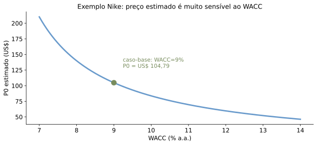

Avaliando Ações (Parte 2)
Recall: da Aula 5 (Parte 1) para hoje
Vimos o modelo do dividendo descontado:
\[P_0 = \sum_{t=1}^{\infty} \frac{Div_t}{(1+r_E)^t}\]
Hoje: o que fazer quando dividendos não são a melhor medida do que a firma paga a seus investidores?
Hoje
- Dificuldades com o dividendo descontado
- Fluxo de caixa livre (FCF) descontado
- Múltiplos e empresas comparáveis
- P/E, EV/EBITDA e outros múltiplos
Do dividendo ao fluxo de caixa da firma
- Dividendo descontado: valor do fluxo de caixa pago ao acionista.
- FCF descontado: valor total da firma — acionistas e credores.
Recall: valor da empresa
\[VE = VMercado_{Ações} + Dívida - Caixa\]
- Dívida \(-\) Caixa: dívida líquida.
- Equivalente ao custo de adquirir o negócio pagando a todos, usando o caixa como parte do pagamento.
- É o valor da firma desalavancada (só capital próprio).
Recall: FCF de um projeto
Na análise de projetos (Aula 7), o FCF é
- recursos livres, que podem repagar credores, pagar dividendos ou financiar outros projetos.
FCF da firma como um todo
Aqui, o mesmo conceito aplicado à firma inteira:
- recursos disponíveis antes de atividades de financiamento, que podem ser usados para repagamentos.
\[FCF = EBIT(1-\tau) + \text{Depreciação} - \text{DesCap} - \Delta CapGiro\]
Valor da firma via FCF
\[V_0 = VP\left(\{FCF_t\}_{t=1}^{\infty}\right)\]
Voltando à equação do valor total da empresa,
\[V_0 = VMercado_{Ações} + Dívida - Caixa\]
Do valor da firma ao preço da ação
\[P_0 = \frac{V_0 + Caixa - D_0}{\text{número de ações no mercado}}\]
O valor da ação é o que sobra do valor da firma depois de pagar a dívida líquida, dividido pelo número de ações.
Recall: por que \(r_E\) no dividendo descontado
No desconto dos dividendos, usava-se o custo de capital acionário \(r_E\):
- outside option do acionista — retorno de um investimento com perfil de risco equivalente.
Qual taxa descontar o FCF da firma?
Aqui descontamos o valor total da firma:
- Dívida e ações têm padrões de risco diferentes.
- A taxa de desconto é uma combinação das duas.
- \(r_{WACC}\) — weighted average cost of capital. Voltaremos ao tema mais adiante.
Fórmula do FCF descontado
\[V_{0}=\frac{FCF_{1}}{1+r_{WACC}}+\frac{FCF_{2}}{\left(1+r_{WACC}\right)^{2}}+\cdots+\frac{FCF_{N}}{\left(1+r_{WACC}\right)^{N}}+\frac{V_{N}}{\left(1+r_{WACC}\right)^{N}}\]
Exemplo: Nike, Inc.
| Vendas em 2022 |
US$ 46,710 bilhões |
| Crescimento em 2023 |
10%, caindo 1 p.p./ano até 5% em 2028 |
| EBIT |
16% das vendas |
| Aumento no capital de giro |
5% do aumento nas vendas |
| CapEx |
igual à depreciação |
| Caixa |
US$ 12,997 bilhões |
| Dívida |
US$ 12,627 bilhões |
| Ações em circulação |
1.574 milhões |
| Alíquota de imposto |
25% |
| WACC |
9% |
Qual seria o valor da ação da Nike no início de 2023?
Fonte: Berk, DeMarzo e Harford (2024), Fundamentals, 6ª ed., Ex. 10.1. Base 2022 conforme a tabela; a frase inicial ainda traz o dado de 2018.
Exemplo: Nike — valor terminal
\[V_{2028} = \left(\frac{1{,}05}{0{,}09-0{,}05}\right) \times FCF_{2028} \;\approx\; \text{US\$ } 222.402{,}0 \text{ milhões}\]
Usando o FCF de 2028 sem arredondamento intermediário (não os 8.472,5 já arredondados da tabela).
Nike: valor da empresa e da ação
\[V_{0} = \sum_{t=1}^{6}\frac{FCF_t}{1{,}09^{t}} + \frac{V_{2028}}{1{,}09^{6}} = \text{US\$ } 164.575{,}2 \text{ milhões}\]
\[P_{0} = \frac{164.575{,}2 + 12.997 - 12.627}{1.574} = \text{US\$ } 104{,}79\]
Calculado diretamente das premissas do enunciado — bate com o valor de referência do exemplo. Fonte: Berk, DeMarzo e Harford (2024).
Muitas estimativas, muita incerteza
O FCF descontado depende de diversas premissas:
- receitas
- custos
- necessidades de investimento
- impostos
Quanto isso importa? Sensibilidade ao WACC

Pequenos erros na taxa de desconto geram grandes erros de preço — o mesmo problema já visto com \(g\) no dividendo descontado.
Resumo: o que descontar
| Pagamentos de dividendos |
Preço das ações |
| Total de pagamentos (dividendos e recompras) |
Valor do patrimônio líquido |
| Fluxo de caixa livre (disponível para todos os titulares de direitos) |
Valor da empresa |
Em todos os casos, o valor presente é o custo de replicar os fluxos com o mesmo perfil de risco.
E se não quisermos projetar fluxos?
Toda essa conta depende de premissas sobre o futuro.
E se usássemos apenas preços que o mercado já revelou?
Ideia: empresas comparáveis
- Tome uma firma A de valor desconhecido.
- Imagine que exista uma firma idêntica B.
- O valor de A deve ser igual ao de B — caso contrário, há arbitragem.
Na prática, empresas diferem
- Mesmo firmas do mesmo setor diferem — por exemplo, em escala.
- Nesse caso, há um ajuste simples.
- Método dos comparáveis: usa a comparação com outras firmas ou investimentos de fluxos de caixa semelhantes para estimar o valor.
Múltiplos de avaliação
- Usam uma razão obtida de firma comparável para estimar o valor, levando em conta a escala.
- Análogo a avaliar um apartamento pelo valor do metro quadrado no bairro.
Razão preço-lucro (P/E)
Razão entre preço da ação e resultado (lucro) por ação.
\[P_{F}=\left(\frac{P_{C}}{E_{C}}\right)\times E_{F}\]
O índice \(\left(P_C/E_C\right)\) de firmas comparáveis estima o preço \(P_F\) de uma firma com resultado \(E_F\).
Intuição e dificuldades do P/E
- Intuição: a ação é direito sobre os resultados futuros da companhia.
- Dificuldades: endividamento de prazos ou custos distintos, taxas de crescimento diferentes, outras divergências contábeis.
P/E e o dividendo descontado
\[Forward\,\frac{P}{E}=\frac{P_{0}}{EPS_{1}}=\frac{Div_{1}/(r_{E}-g)}{EPS_{1}}=\frac{Div_{1}/EPS_{1}}{r_{E}-g}\]
- Numerador: taxa de pagamento de dividendos.
- Denominador: desconto ajustado por crescimento.
- “Growth and value stocks”.
Múltiplos de valor da empresa
- P/E tem a mesma limitação do dividendo descontado: olha só ações, ignora a dívida.
- Alternativa comum: múltiplos sobre o valor da empresa — EV/EBIT, EV/EBITDA.
Com crescimento constante do FCF,
\[\frac{V_{0}}{EBITDA_{1}}=\frac{FCF_{1}/(r_{WACC}-g_{FCF})}{EBITDA_{1}}=\frac{FCF_{1}/EBITDA_{1}}{r_{WACC}-g_{FCF}}\]
Outros múltiplos
- Vendas/receita: \(EV/vendas\) — hipótese de margens semelhantes entre firmas e no tempo.
- Ativos tangíveis: \(Price/(Book\ por\ ação)\) — hipótese de retornos semelhantes sobre esses ativos.
- Específicos da indústria: \(VFirma/assinante\), em streaming.
Quando múltiplos erram
- O erro depende da diferença entre as firmas e da sensibilidade do múltiplo a essa diferença.
- É sempre avaliação relativa: impossível dizer se uma indústria inteira está sobrevalorizada.
Múltiplos vs. FCF descontado
| Informação usada |
preços de mercado |
estimativas próprias |
| Vantagem |
informação de mercado, não estimativa |
leva em conta diferenças entre firmas |
| Desvantagem |
ignora diferenças entre firmas |
depende de premissas e estimativas |
Comparáveis: indústria de calçados (2019)
| Nike, Inc. |
134.210 |
132.775 |
33,22 |
13,68 |
3,65 |
25,44 |
| Adidas AG |
50.885 |
49.475 |
28,69 |
6,95 |
1,97 |
14,81 |
| Under Armour |
9.219 |
8.862 |
NM |
4,71 |
1,66 |
18,82 |
| Puma AG |
9.110 |
9.538 |
43,42 |
9,24 |
4,26 |
33,70 |
| Skechers U.S.A. |
5.452 |
5.185 |
18,04 |
6,76 |
3,13 |
26,45 |
| Wolverine World Wide |
3.283 |
3.280 |
17,83 |
21,89 |
3,01 |
34,53 |
| Steven Madden, Ltd. |
2.943 |
2.068 |
22,84 |
1,45 |
0,44 |
3,78 |
| Rocky Brands, Inc. |
189 |
179 |
13,13 |
1,24 |
0,71 |
7,78 |
| Média |
|
|
23,99 |
7,46 |
2,17 |
19,98 |
| Máximo |
|
|
+81% |
+193% |
+96% |
+73% |
| Mínimo |
|
|
−45% |
−83% |
−80% |
−81% |
Média/Máx./Mín. excluem a Nike (alvo da avaliação, não comparável) e, no P/E, a Under Armour (NM). Fonte: Berk & DeMarzo (2024), Tabela 10.1, abril de 2019.
Nike hoje: múltiplos ao vivo
| Preço |
US$ 40,87 |
| Market cap (US$ mm) |
60.632,7 |
| Enterprise value (US$ mm) |
64.634,5 |
| P/E (trailing) |
19,46 |
| P/E (forward) |
17,72 |
| Preço/Book |
4,08 |
| EV/Receita |
1,39 |
| EV/EBITDA |
13,11 |
Fonte: yfinance, snapshot de 23/07/2026. Substitui a captura de tela do Yahoo Finance de 14/ago/2013 usada na versão original do slide.
Ao vivo: finance.yahoo.com/quote/NKE
Recapitulando
- FCF descontado: valor da firma toda, descontado a \(r_{WACC}\); preço da ação sai do valor da firma menos dívida líquida.
- Múltiplos e comparáveis: usam preços de mercado em vez de projeções — P/E, EV/EBITDA, EV/vendas, Price/Book.
- Nenhum método é definitivo: cada um erra de um jeito diferente, e analistas costumam combinar vários.